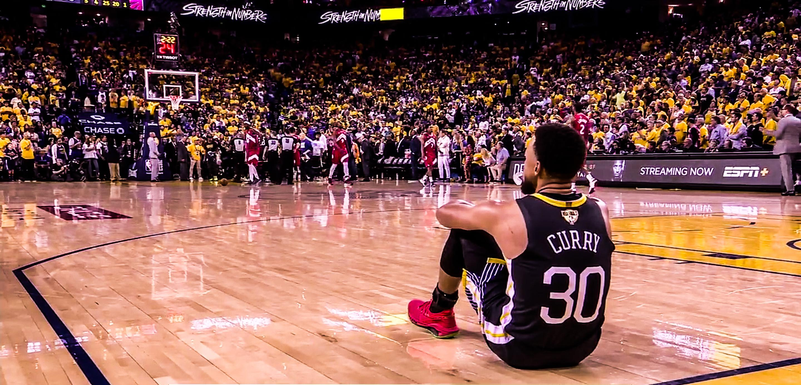
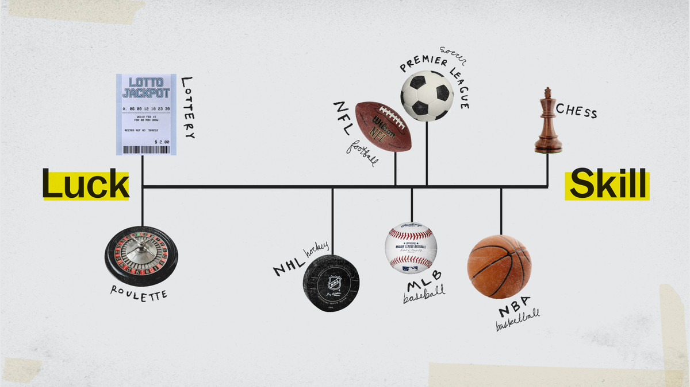
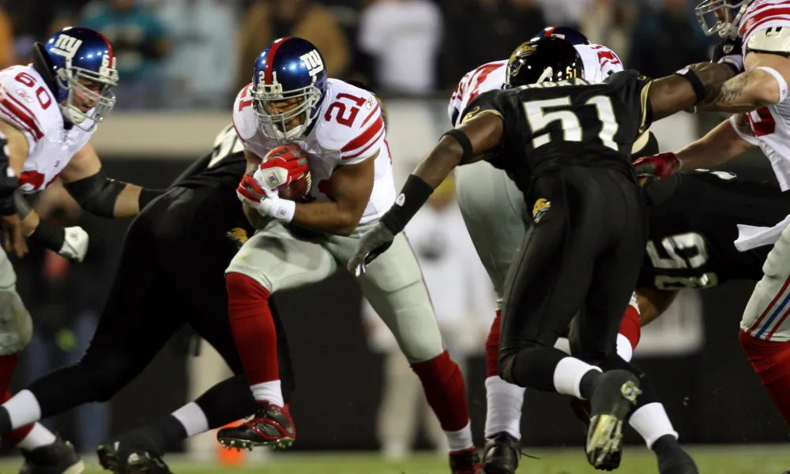
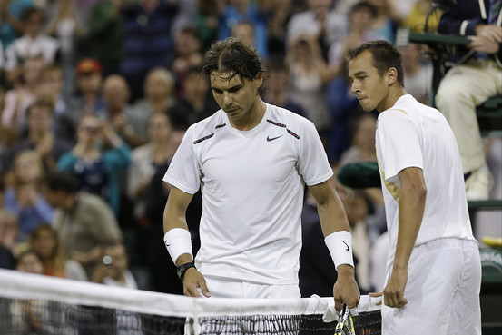

The Correlation of Luck and Skill in Modern-Day Sports
An Argumentative Academic Research Essay

Every sport is influenced by two factors: luck and skill. These two variables are what cause the resulting outcomes within sporting events, such as the final score, injuries that occur within the game, and even smaller, more minor events such as a good play or an attempt at scoring a point. It is often forgotten that some things within sports are out of one's control, which is where a luck variable comes into play.
The same could be said about skill; certain things are within one's control. Working in conjunction consistently and constantly, luck and skill affect the tempo of the game and influence it in multiple different ways, but there are also certain times for brief moments where one variable may outweigh the other.

Luck and skill are constantly working, as stated previously, including in E-Sports. The collaboration between the two variables produce a shared effect on the outcome of any game. For example, the correlation between luck and skill in League of Legends helps determine the game's success as a video game. If a game is centered more around luck than skill, then it would be considered a volatile game, being as unstable as it is.
Games with a skill-dominated intent have a more stable relationship with their fan bases, unlike their counterpart where "Luck-dominated competitions could not produce reliable results for teams and would not be compelling as a player or observer" (Douglas 16-17). Luck is not something that can be practiced. You can practice and become skillful in order to eventually become lucky in certain areas, but the variable that can be controlled is the skill aspect.
You can not create a competitive environment if the sport is dominated by luck variables. In that situation, there wouldn't be accurate results as to who is truly a better athlete if statistics calculate more luck-motivated intentions than skill ones. In addition, three important aspects must be emphasized when analyzing sports. The number of players on the pitch or court is the first factor. The sample size is another factor that must be taken into account.
The results can be skewed and result in more volatility if the sample size for a sport is smaller. The results can reflect more luck than skill. The final aspect is how the scoring works in sports (Arbesman). There are so many variables that can decide any game. Especially when analyzing luck and skill ratios throughout the multitude of sports, different variables affect different sports in different ways; it all comes down to what sport is getting put under the microscope.
Comparing basketball to soccer can be unfair as you are looking at two different sample sizes of players with different skill sets and different objectives. From that picture, conclusions can be drawn at which sport requires more luck than skill. Organizing them along a graph is possible but otherwise, comparisons are irrelevant. Due to non-tangible variables working in sports, different outcomes are seen as a result of the luck and skill ratios in tandem.
Luck can be more of an influential factor in sports than skill at certain points. This is shown throughout athletic history whenever close games produce results in the fashions that they did. For example, sports fans and advocates will admit that the play-off system has its flaws. One result of this flaw could be the 2006-2007 New York Giants qualifying for playoffs in the NFL. The playoffs, being as short of a period as they are, allow for weaker, less talented teams to upset more formidable opponents.
This is due to the variables associated with luck and skill. If there is less time to play, there will be more opportunities for luck to prevail over skill, even though there is a definite mixture of the two in every sport (HSAC 3). The purpose of playoffs is to separate the "contenders from the pretenders", and that is usually the case with certain exceptions.
In this case, the New York Giants were included in the playoff picture, but according to some, undeservedly. In order to make it to the playoffs, the skill has to be there. No team in any league or any sport will ever make it to their respective playoff on pure luck and no skill. The New York Giants in the 2006-2007 season must have had skill if they made it to the playoffs. They may have had a few strokes of luck during the season, which can make or break a season; (ironically, they went on to win the Super Bowl during the 2007-2008 season, the following season so they must have had a lot of skill).
In addition, by relating to the Pythagorean Theorem of Statistics we can find the total influence of luck and skill on an event. If "... you have two random, independent variables, then you can add their variances". The "equation" created from this concept can be seen as skill and luck equals the outcome that occurred on the playing surface (Vox).

Based on this formula, luck and skill working together create the outcome of an event. The definition of luck and skill are arbitrary, meaning anything can be accepted as luck or skill as it can be difficult to differentiate between the two. The purpose of this formula is to conclude that luck and skill are variables that we, as viewers, see in every sports match. For the most part, those are the two main, influential variables that create the outcomes that sports fans see every day. In conclusion, luck is evident throughout many sporting events in history, and it can be seen that it is an important and deciding variable throughout much of athletics in general.
Opposing views claim that luck does not affect the resulted outcome in sports. One cannot deny that in order to play sports, especially at a more professional level, you will need to have the skill to make it there. This can be seen when Rafael Nadal played Lukas Rosol in the 2012 Wimbledon tournament. At the time, Nadal was ranked 2nd in the world and Rosol was 100th. Rosol was expected to be dispatched from the tournament fairly easily by Nadal.
Rosol was even quoted saying that he was hoping he doesn't get blown away and at least play some good sets. In a turn of events, Rosol defied the odds and sent Rafael Nadal home beating him by a formidable score of (6-7 (9), 6-4, 6-4, 2-6, 6-4), beating him in 4 out of the 5 sets played. This is considered to be the greatest upset in Wimbledon history, but was Nadal unlucky, or was Rosol lucky? (Hales 500). If a tennis player qualifies for Wimbledon, then by all regards, they are one of the best in the world.
By that point, they are skillful enough to be competing there with the best players in the world. Luck shouldn't have a major impact on the outcome of an event since that is the scenario. However, luck can take on many forms in variables that can affect how an athlete performs in a match.
As stated here "A particular case is soccer tournaments, in which it seems difficult to predict the outcome of a game or who will be the winner in a certain championship, because there are many factors involved, such as those previously exposed (athletes, fields and technical personnel) as well as the presence of the public on the fields, injuries of the players, among others" (Blanco et al 3). Luck does not have to be an intangible item or something of a blessing, as pop culture would have it interpreted. Luck is anything that is out of one's control that can sway a result in one's favor.
In this scenario stated previously, luck can be affected by the field, technical personnel, fans in the stadium, injuries of players, and more. Therefore, it is quite evident to see that even though skill is crucial in sports, luck is another variable that helps create an outcome for the event, which can take the form of a scoreline or an injury, or any play that happens in any sport. It is important to remember that both variables work together to create everything seen on the field of play.

Working in conjunction consistently and constantly, luck and skill both influence the games that people play all the time. Both variables are always present when playing a sport and it is impossible to have one outweigh the other. One variable isn't more important than the other as they both, again, work in conjunction to produce the physical results that fans and players see daily.
Although statisticians have this knowledge about the correlation between the two factors, nobody can or will ever be able to predict the outcome of sports with 100% certainty. The thing about sports is that the stats on paper might not always line up with the final result. It is important to know that the two previously stated items are the most prominent variables in statistics for sports.
Bibliography
- Arbesman, Samuel. “Luck and Skill Untangled: The Science of Success.” Wired, 11 Nov. 2012.
- Blanco, Leonardo B., et al. “Is Football/Soccer Purely Stochastic, Made Out of Luck, or Maybe Predictable? How Does Bayesian Reasoning Assess Sports?” Axioms, 2021.
- Connolly, Robert A., and Richard J. Rendleman Jr. “Skill, Luck, and Streaky Play on the PGA Tour.” Journal of the American Statistical Association, vol. 103, 2008, pp. 74-88.
- Douglas, Cameron David. Luck and Skill in Professional League of Legends (E-Sports). MIT, June 2018.
- Hales, Steven D. “Why Every Theory of Luck is Wrong.” Noûs, vol. 50, no. 3, 2016, pp. 490-508.
- Huffaker, Christopher. “Luck Plays a Bigger Role in Some Sports than Others - How Come?” Pittsburgh Post-Gazette, 9 May 2018.
- Ryan, Julian, and Barrett Hansen. “Undeserving Champions: Examining Variance in the Postseason.” Harvard Sports Analysis Collective, 30 Sept. 2013.
- “Why Underdogs Do Better in Hockey than Basketball.” YouTube, Vox, 5 June 2017. Watch